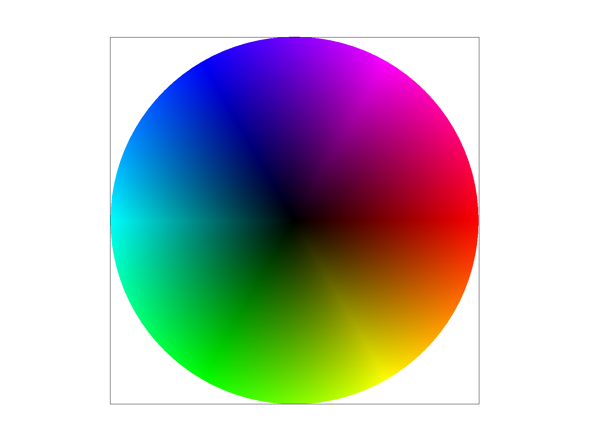

In this assignment, I implemented a rasterizer that has the following capabilities: drawing triangles with solid or linearly interpolated colors; supersampling to achieve an antialiased image; transforms; texture mapping with antialiasing using pixel and level sampling.
To rasterize a triangle, we sample one pixel at a time and determine whether or not that point lies within or on the edge of the triangle – if it is, we fill that pixel with color.
In my implementation, we traverse each point within the bounding box of the triangle – from left to right, bottom to top. We then compute the line equations with Li(x,y) = -(x - Xi) * (Y(i+1) - Yi) + (y - Yi) * (X(i+1) _ Xi), where Pi = (Xi, Yi) is each vertex of the triangle. We perform the three line test a total of two times – one for each a clockwise and counterclockwise winding order – for a total of 6 equations. If the result of all three equations of one winding order is greater than or equal to zero, then the point is in the triangle and we call fill_pixel(), assigning a color to the sample_buffer index corresponding to (x,y).
Supersampling is a way of antialiasing to produce a higher quality image. Instead of sampling one point per pixel, supersampling requires sampling at multiple points within a pixel, then averaging those sample points down. In this case, we will sample at sqrt(sample_rate) * sqrt(sample_rate) grid locations within a given pixel, then average the colors at those sample points.
In my implementation, I altered rasterize_triangle() to calculate whether or not each super sample point corresponding to a single point in the frame buffer is in the triangle. We traverse the bounding box of the triangle starting at the lower left corner, offset by 1/(2n), where n is equal to the square root of the sample rate. We then increment by 1/n and traverse the box from left to right, bottom to top. If the sample point is in the triangle, that point corresponding to an index in the sample_buffer (of size width * height * sample_rate) is filled.
The rest of the supersampling algorithm is implemented in resolve_to_framebuffer(). For each pixel in the framebuffer (of size width * height), we traverse the sample_buffer (of size width * height * sample_rate) in blocks of size sqrt(sample_rate) * sqrt(sample_rate), storing the sum of each color channel. We then take the average and assign that color to the corresponding pixel in the framebuffer.
To account for managing supersample buffer memory, I modified set_sample_rate(), set_framebuffer_target(), to resize the sample_buffer to (width * height * sample_rate)
I modified fill_pixel() to set Color c to the index [y * width * sqrt(sample_rate) + x] in the sample_buffer. I also modified rasterize_point() to fill all the super samples corresponding to the point with the same color so that in resolve_to_framebuffer(), the point comes out as a single sampled pixel.
|
|
|
Barycentric coordinates allow us to linearly interpolate values across a triangle. In this case, we have a triangle with three different colored vertices and want to interpolate color smoothly across. Using the formulas shown below, we can calculate the coordinates (alpha, beta, gamma) for each sample point. If all three barycentric coordinates are non negative, the point lies inside the triangle. We can then use the coordinates as a weighted sum (alpha * colorA + beta * colorB + gamma * colorC) to get the color of the sample point and call fill_pixel to store the color at the corresponding index in the sample_buffer.

Texture mapping requires converting each coordinate in screen space to a coordinate (u,v) in texture space. Using pixel sampling, we can sample the texture to get the corresponding texture color to set at the sample (x,y). Nearest neighbor sampling involves getting the texel at the nearest texture coordinate to (u,v). Alternatively, to sample using bilinear interpolation, we take the nearest four sample locations to (u,v) and linearly interpolate between the four coordinates to get the texture color.
I implemented this by first calculating the barycentric coordinates of a given sample point in the triangle in screen space and using those coordinates as a weighted sum to get the corresponding (u,v) coordinates in the triangle in texture space. We then call the function sample. If the PixelSampleMethod, toggled by the ‘P’ key, is equal to P_NEAREST, we round u and v to the nearest integer and call get_texel to get the texture color at that coordinate. If psm is equal to P_LINEAR, we find the four coordinates nearest to (u,v). Then use lerps to calculate the interpolated texture color. The resulting texture color is then assigned to the corresponding index in the sample_buffer with fill_pixel.
|
|
|
|
|
|
Compared to the image using nearest sampling, the image with bilinear sampling appears smoother and has less jagged edges. There will be a large difference between the two methods when neighboring pixels have drastically different colors – while nearest sampling would display those changes abruptly, bilinear sampling would have interpolated between those colors, giving a smoother appearance.
Level sampling requires storing multiple levels of a texture image – starting at full resolution and getting progressively lower in resolution with each level by filtering out high frequencies and downsampling. Then, for each (x,y) sample, we calculate the corresponding mipmap level D, and get the texel (u,v) at that particular level.
In my implementation, if LevelSampleMethod (toggled by the ‘L’ key) is equal to L_ZERO, we use level 0, the full resolution texture image, and proceed with pixel sampling as described in the previous task.
Otherwise, we calculate the mipmap level in get_level(). We can calculate the difference vectors ((du/dx),(dv/dx)) and ((du/dy),(dv/dy)) using the barycentric coordinates of (x,y), (x+1, y), and (x,y+1) and converting to (u,v) coordinates. We need to scale the vectors by the width and height of the full resolution texture, and then we can calculate the following: L = max(sqrt((du/dx)^2 + (dv/dx)^2), sqrt((du/dy)^2 + (dv/dy)^2)) and the mipmap level D = log2(L). We also need to clamp D within the range [0, number of mip levels - 1].
If lsm is equal to L_NEAREST, we round D to the nearest integer and proceed with pixel sampling. If lsm is equal to L_LINEAR, we leave D as a continuous value. We then pixel sample at the two nearest mipmap levels to D, and linearly interpolate the results.
|
|
|
|
|
|
Comparing the three sampling techniques of pixel sampling, level sampling, and supersampling, we can see the tradeoffs between speed, memory usage, and antialiasing power. Supersampling is costly in terms of memory and speed. In addition to the frame buffer, supersampling requires storing an additional, larger buffer. Supersampling also requires more lookups per pixel in the framebuffer than single sampling. However, the idea behind it is simple and achieves an antialiased image. Pixel sampling works better than supersampling for texture antialiasing. When magnified, pixel sampling produces a higher quality image. Level sampling with mipmaps produces a high quality, antialiased image. Mipmaps allow for antialiasing, specific to each pixel footprint. Because each level is of increasingly smaller resolution, mipmaps only take up ⅓ more memory than the original full resolution image.